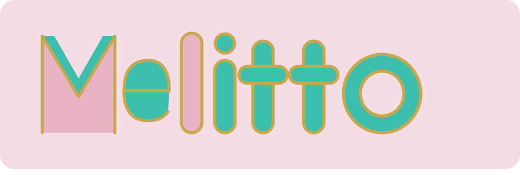
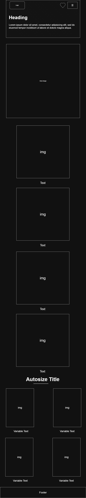
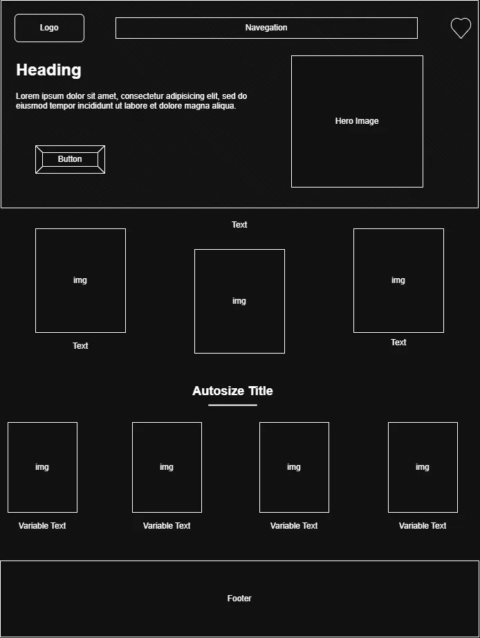

This name represents the dressmaker's name (Melina) and creates a cute, short, simple, memorable and easy to pronounce brand in both Spanish and English. It also represents a handmade and friendly brand identity that reflects the creativity an personal work behind the dressmaking products. The name is flexible and allows the brand to grow beyond clothing into other handmade items in the future.
Optional domain availability: melitto.com

Present a digital gallery and shop for handmade clothing and dressmaking products under the Melitto brand.Visitors will be able to broewse items by category, view product datails, and contact information to request custom orders. The site aims to promote the Melitto brand and provide an accessible bilingual experience. It will also include information about the workshop, the sewing use, and the variety of fabrics available to help visitors understand the production process.
#3CBFAD:Used for buttons, links, and interactive elements
#E8B4C4:Use for background sections and higlights
#C8A84B:Used as an accent color for headings, icons, or important detail.
#F5DDE5:Use for soft background areas to create contrast
Poppins: Used for the body
Nunito Sans: Used for headings
Wireframe design of the page in mobile view

Wireframe design of the page in a wider view
